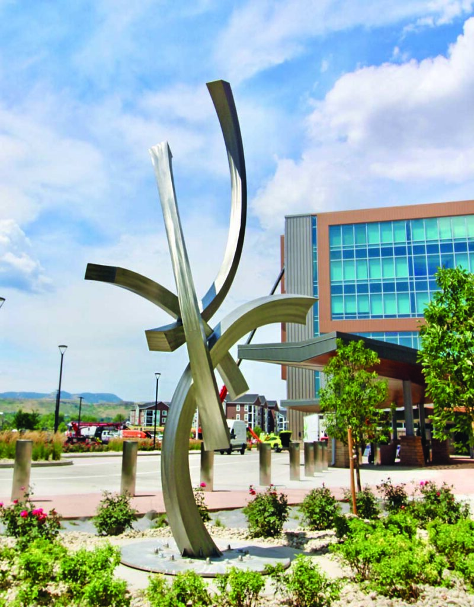

Intermountain Health Lutheran Hospital
Stainless Steel Sculpture

During my time working with LucaSteel, I had the privilege of contributing to the creation of a 17-foot-tall stainless steel sculpture commissioned for the new Intermountain Health Lutheran Hospital in Wheat Ridge, Colorado. Designed by the renowned artist Kevin Robb, this project became the largest and most complex piece I have worked on.
Building this sculpture required a blend of creativity, problem-solving, and meticulous craftsmanship. Transforming large, flat sheets of stainless steel into a flowing, organic design challenged me to think outside the box. The project spanned nearly 500 hours, shared between Lucas and me, and demanded extreme attention to detail. Every edge had to be sharp, every line smooth, and every surface finish flawless. The artist himself frequently visited our workshop, providing feedback and marking any imperfections with a Sharpie, ensuring the sculpture met his exacting standards.
The fabrication process began with CNC laser cutting the flat stainless steel sheets into precise shapes based on Lucas's drawings. Each piece was bent, tack-welded, and meticulously sanded at the joints to ensure seamless connections. To guarantee strength, we ground deep grooves into the joints before welding them for full penetration. After welding, the edges were re-sanded and polished to achieve the desired surface finish. Each completed piece was carefully hung on our gantry, aligned according to the artist's vision, and notched together before being welded to the base.
This project held deep personal significance for the artist, Kevin Robb. Having suffered a stroke two decades earlier, it was at Lutheran Hospital that his life was saved. His story and connection to the hospital added a layer of meaning to our work, making it more than just a sculpture—it was a symbol of resilience and gratitude. You can learn more about Kevin’s story and the sculpture through this feature by 9News: Link to 9News article.
The process of building this sculpture was both mentally and physically demanding. I gained new skills, overcame significant challenges, and took immense pride in seeing the finished piece installed at its final location. Knowing the joy it brought to the artist and hoping it provides inspiration and comfort to hospital visitors made all the hard work worthwhile. This project exemplifies my ability to tackle complex problems, work collaboratively, and deliver high-quality results—skills I strive to bring to every endeavor.